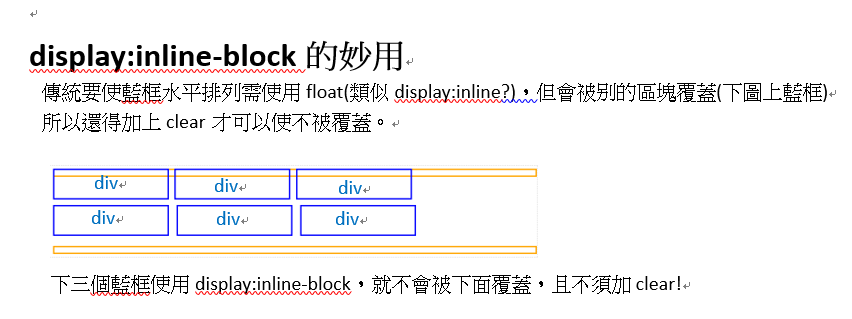

綜合筆記
1.標籤種類及嵌套規範
標籤種類的劃分
按標籤分類
- block區塊元素:
- 獨佔一整行；支持所有樣式(如背景等);不寫width時，預設值是和父元素同(未嵌套下即瀏覽器寬度，嵌套關係下就繼承父元素)
- inline內行元素:
- 左右排列，且緊連在一起(想要有空隙，則換行寫即可);非支持所有樣式(不支持寬高設置)；寬度是由內容長度來撐開
- inline-block:上者的強化版，可支持寬高，且不會被覆蓋
各種分類的代表
| 分類 | 代表標籤 |
|---|
| block元素 | 如:div,p,ul,li,h1...... |
| inline元素 | 如:span,em,strong...... |
| inline-block元素 | 如:input,select...... |
按顯示分
- 替換元素:
- 如:img,input等(需要加入屬性後才可操作)
- 非替換元素:
- 如:h1(只要有標籤就可作用)
標籤嵌套規範
- block內可以放入inline；相反則不能，但有特例:a內可以加入div或圖片
- black之間不一定可以互相嵌套(大部分可):例如P內不能放div
2.顯示框類型(display)
display的顯示框樣式有很多種，在此介紹四種基本款:
- block:顯示框一次會占用一整行的空間，呈上下排列。寫法:span{display:blocks}
- inline:顯示框可以左右水平排列，但可能會被別的區塊覆蓋。寫法:div{display:inline}
- inline-block:是上者的更強大功能，不只可以使區塊水平排列，且不會被別的區塊覆蓋(有block獨佔的效果)。寫法:div{display:inline-block}
- none:消失，什麼都沒有了。不知道要幹嘛?!

關於inline和inline-block的差別參考網站
3.溢出隱藏(overflow)
**以下展示，每個div內都放入5個單詞，並設置不同的overflow效果，以供查看
visiable visiable visiable visiable visiable
hidden hidden hidden hidden hidden
scroll scroll scroll scroll scroll
auto auto auto auto auto auto
XY軸
- hidden效果:把一個超出的hidden隱藏了
- scroll效果:總是顯示右邊和下面的兩條滾條
- auto效果:滾條只會出現在當內容超出時(且只會出現右滾條)，平常沒超出時看起來和hidden是一樣的
- XY軸的設置:
| 選擇的軸 | 效果和寫法 | 備註 |
|---|
X軸 | 為X軸設置滾條；overflow-x:scroll | X軸即為下滾條
此例只有使用X軸設置，故只有下滾條 | | Y軸 | 為Y軸設置滾條;overflow-y:auto | 即右滾條,輸入auto和scroll都行
(因S本來就包含兩條)。
本例子無添加Y軸設置 |
4.透明度
- 不透明度opacity:值0~1，0為透明(即整個區塊不見，但依然佔空間)；1為不透明
透明度opacity:0.1
透明度opacity:0.2
透明度opacity:0.5
透明度opacity:1
以上共設置了4個div並設置其不透明度值從0，0.2，0.5，1，供觀看其透明效果
**注意:元素的內容(如文字)也跟著一起透明變化哦!；另外，這也可以作用在P或者img等地上面唷!多多嘗試吧!
- rgba調整透明度:若要使內容不跟著一起透明，則要用到rgba的a值
寫法:{background:rgba(0,0,0,0.1)}
寫法:{background:rgba(0,0,0,0.2)}
寫法:{background:rgba(0,0,0,0.5)}
寫法:{background:rgba(0,0,0,1)}
5.鼠標樣式
- cursor樣式的設置
cursor的樣式(都是當鼠標移入設定的區域時才會變化)
| 種類 | 功能與寫法 |
|---|
| default | 默認箭頭樣式 |
| pointer | 手的樣式 |
| move | 四方箭頭的樣式 |
| help | 帶問號的箭頭樣式 |
**自訂箭頭樣式:{cursor:url(檔案地址),auto;}
注意:鼠標的圖檔只接受cur及ico格式；若要使用ani動態的鼠標檔案，必須貼上網站的網址才行
移進看default箭頭樣式
滑動看語法
語法:{cursor:default}
移進看pointer手手樣式
滑動看語法
語法:{cursor:pointer}
移進看move四方箭頭樣式
滑動看語法
語法:{cursor:move}
移進看help箭頭帶問號樣式
滑動看語法
語法:{cursor:help}
移進看自訂樣式
滑動看語法
語法:{cursor:url(地址),auto;}
本例子使用動態鼠標，網址點此，可以選擇多種動態鼠標唷!
6.最大最小寬高
一般來說像div這樣的區塊設置寬高後，內容會有溢出的情況，若設定了最大最小寬高，框框就會以最大最小直來自動調整
例如:設置{max-height:200px}，則此塊內容自動調整的方式為:最大只會到200px，當內容少於200px時，框框會自動縮小；當內容大於200px時，則會溢出。
例如:設置{min-height:200px}，則此塊內容自動調整方式為:框框最小值都有200px，內容少於200時不會變更小；但當內容多於200時，就會直接撐開不會溢出
7.CSS的默認樣式
CSS有很多東西都是有默認值的，而有時這可能造成後續開發的影響，也可能有瀏覽器的適應問題，所以有人會在CSS開始編寫之前先使用CSSreset的解決方案
CSS中可能影響後續開發的默認樣式
| 元素 | 默認樣式 |
|---|
| body | 有margin的默認值 |
| h1~h6 | 有margin的上下默認值，粗體默認 |
| p | 有margin的上下默認值 |
| ul | 有margin的上下默認值，padding左邊默認值，首飾樣式(list-style:disc) |
| a | 鼠標為手型，連結帶底線，且是藍色 |
| img | 是inline的排列方式 |
- 常用的解決方案
- *{margin:0;padding:0}或body,h1,p,ul{margin:0;padding:0}
- ul{list-style:none;}
- a{text-decoration:none;color:#666}
- img{display:block}
總地來說，當在寫一個網頁時，順序應該是:1.寫結構-->2.重置CSS樣式-->3.CSS具體編寫